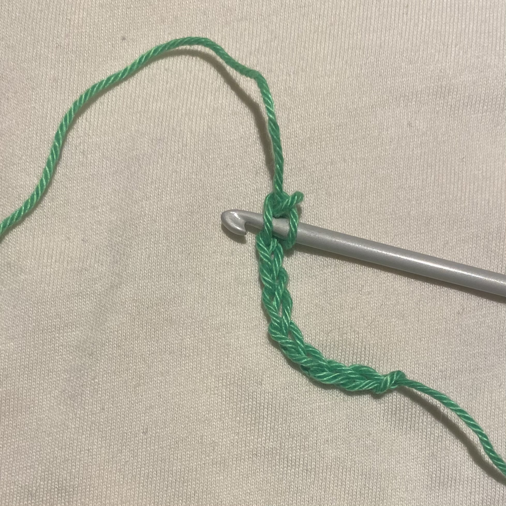
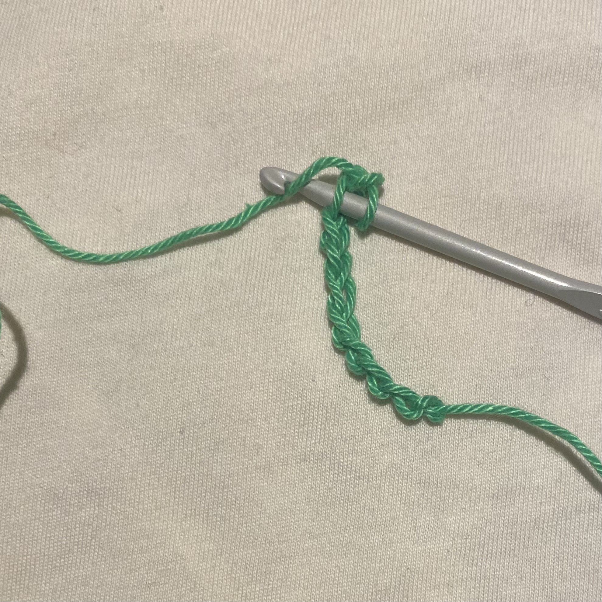
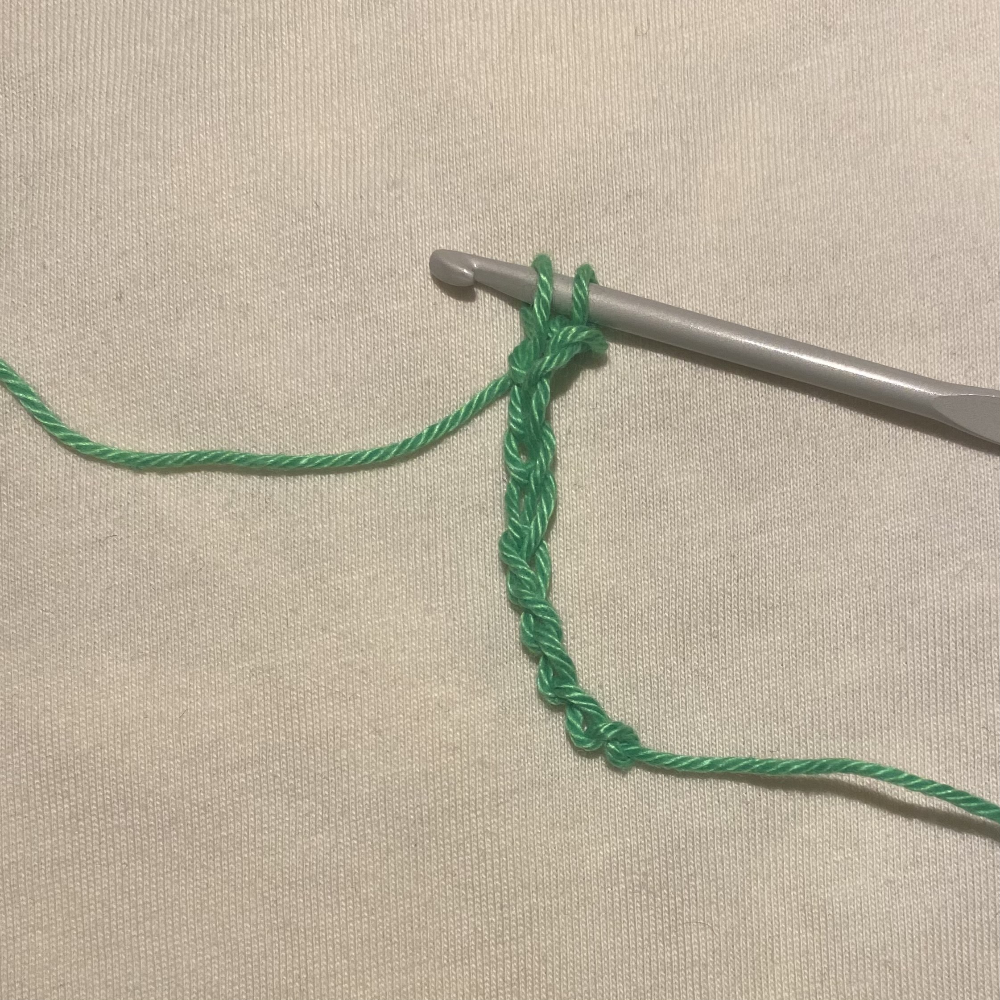
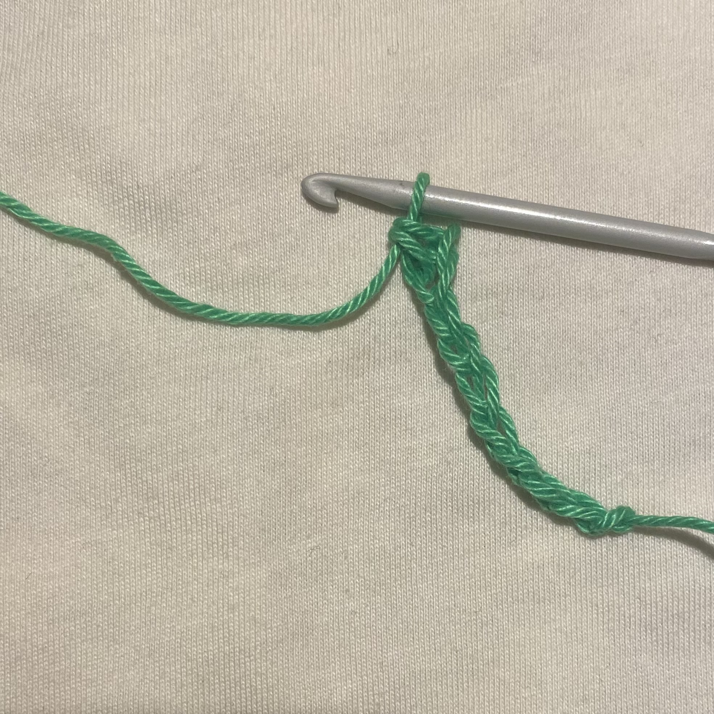
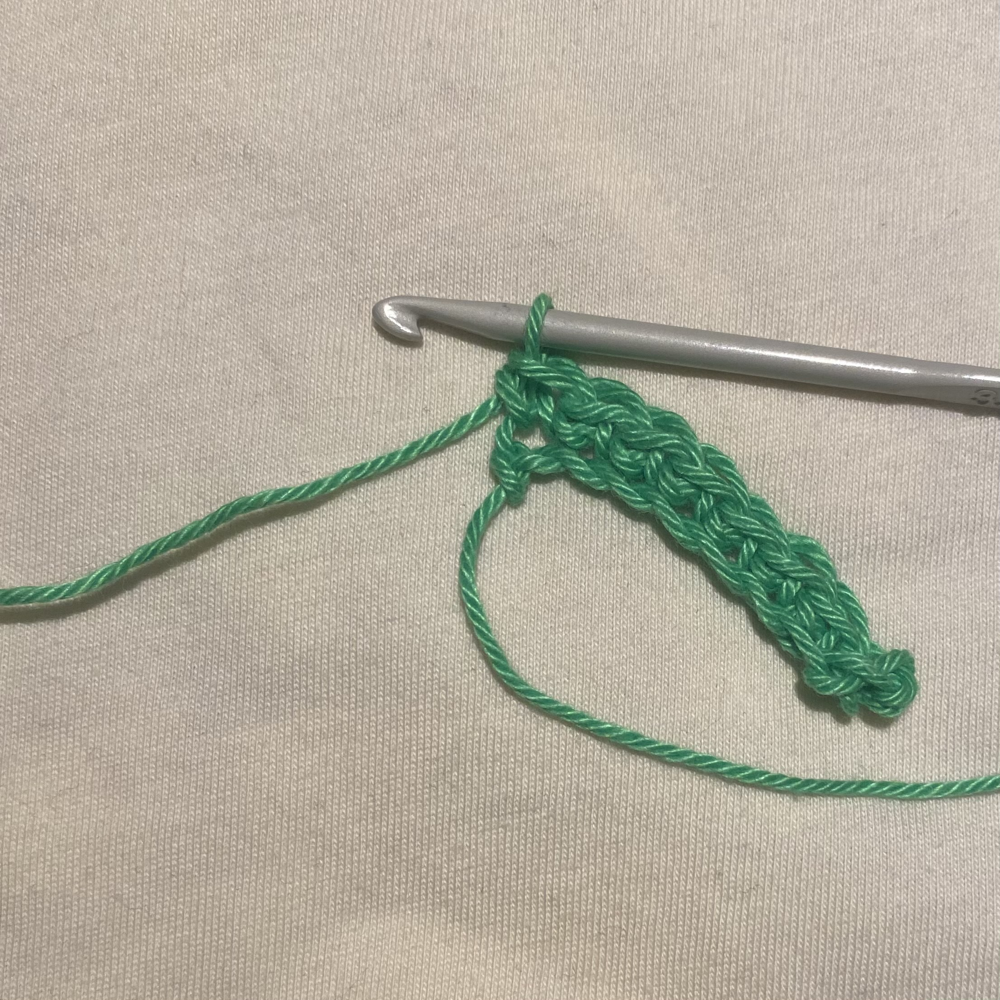

Learn single crochet
-
Insert the hook
Put the hook through the first chain of stitches after creating the foundation chain. Put your hook into the single crochet stitch right below it in the row for the second row and all subsequent rows. Put the hook under both loops on the top of the chain. Some designs require you to complete just one of the loops, which results in a different appearance. When unsure, perform both loops.
Step one of making the a single crochet -
Yarn Over and Grab the Yarn
Prepare to pull up a loop after placing the crochet hook. Grab the yarn with your crochet hook after having wrapped it around the hook. You can discover that you reach a stage where there is no pause between the first and second steps after practicing these procedures until they become instinctive. As soon as you place your hook within the stitch, it will immediately catch the yarn.
Step two of making the a single crochet -
Draw up the Loop
Pull the hook and working yarn through the loops. You should now have two loops on your hook.
Step three of making the a single crochet -
Yarn Over and draw
Wrap the yarn around your crochet hook again, and hook the yarn. Through both of the hook's loops, pass the hook and yarn. The single crochet stitch is now finished. On your crochet hook, there is still one loop. This loop serves as the foundation for your subsequent stitch. To add more single crochet stitches to the row, simply repeat these actions as often as necessary (or round).
Step four of making the a single crochet -
Repeat
Repeat for as long as you need to. When moving onto the next row chain one after your last single crocher. that will be the turning chain.
Step five of making the a single crochet